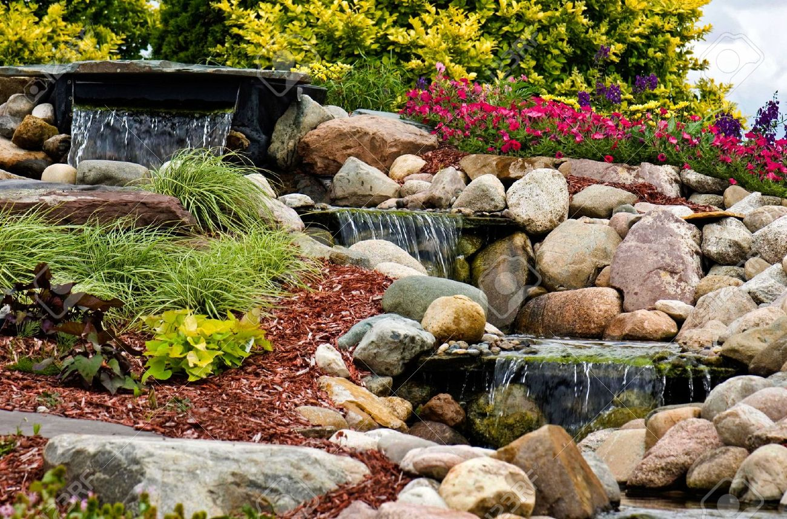
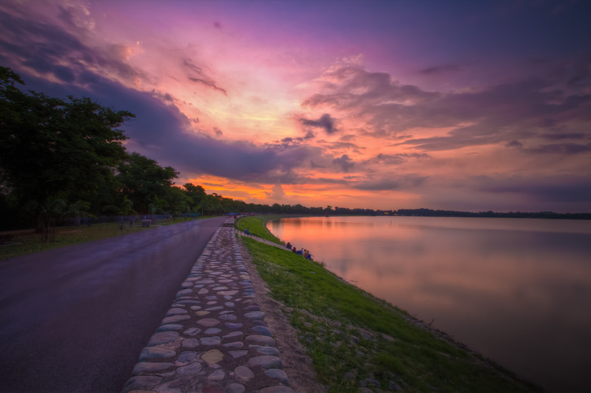
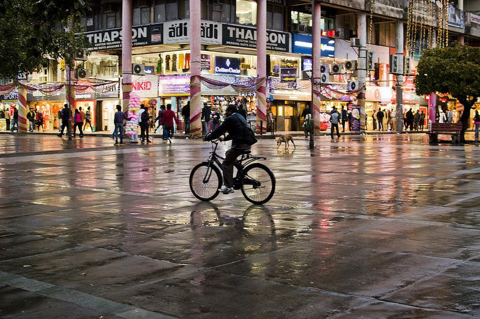
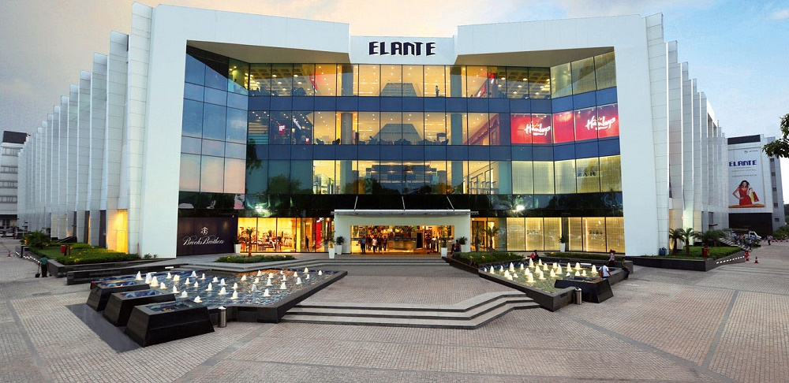
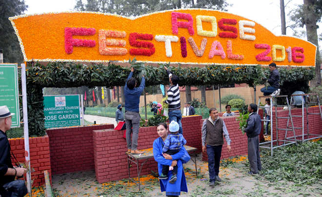

Places nearby -Chandigarh
You all might have heard college life is incomplete without some unforgettable and adventurous trips and Ropar is surrounded by beautiful places to visit. Talking of the surroundings of Ropar we don't even need to think where to start from, yes of course we are talking of "Chandigarh- rightly known as the city beautiful".
Chandigarh is the best-planned city in India, with architecture which is world-renowned, and a quality of life, which is unparalleled. The face of modern India, Chandigarh, is the manifestation of a dream that Pt. Jawahar Lal Nehru envisaged and Le Corbusier executed.
But you need to know what places of interest is the city endowed with. As a first time visitor one is fascinated by the tourist attractions like the Rock Garden, Rose Garden, Sukhna Lake, Chhatbir Zoo, Elante Mall, etc.
Hereby i will provide you a glimpse of the city that awaits your presence: See the intricate work done at the Rock Garden which adds to its resplendence:

The Sukhna Lake will surely be a retreat for eyes and the peace garden would replenish your soul.
The ones from Chandigarh would know the grandeur associated with Secor 17 plaza before the existence of malls in the city.
The Elante Mall came up as one of the biggest malls in the city and has brands to serve all your interests. It has lately become the meet up place for residents just adding to the city's splendor.
Last but not the least Chandigarh is known as the Clean and Green city so why not mention about Rose Garden which exhibits beautiful flora and holds a great annual event the Rose Festival.

So just a long weekend is awaited and you may have a tour of the marvellous city just a few kilometers away from our college.
Welcome to Ropar
"Wow I got admitted to IIT Ropar it was one of my top choices in Josaa. "
"Oh I got IIT Ropar but it was among my bottom preferences."
"OK so I have got admission in IIT Ropar maybe this was in my destiny."
I know that all you freshers can surely relate to one of the above categories. Whether you were here by choice or not but we assure you that your future is secure once you have joined this institution. So no need to worry about anything and just explore "Life At Ropar".
Hereby I would take you through a tour through the city of Punjab i.e. Roopnagar or Ropar.
Firstly let us have a glimpse of the Ropar Canal which will be a place for your evening walks or a place you will often keep visiting to break the monotony of life and start afresh.
Believe me friends the sunrises and sunsets at this place are a great retreat for eyes and the sound of flowing water is soothing to the ears.
I am sure it will be one of your favorite time pass to visit the canal.